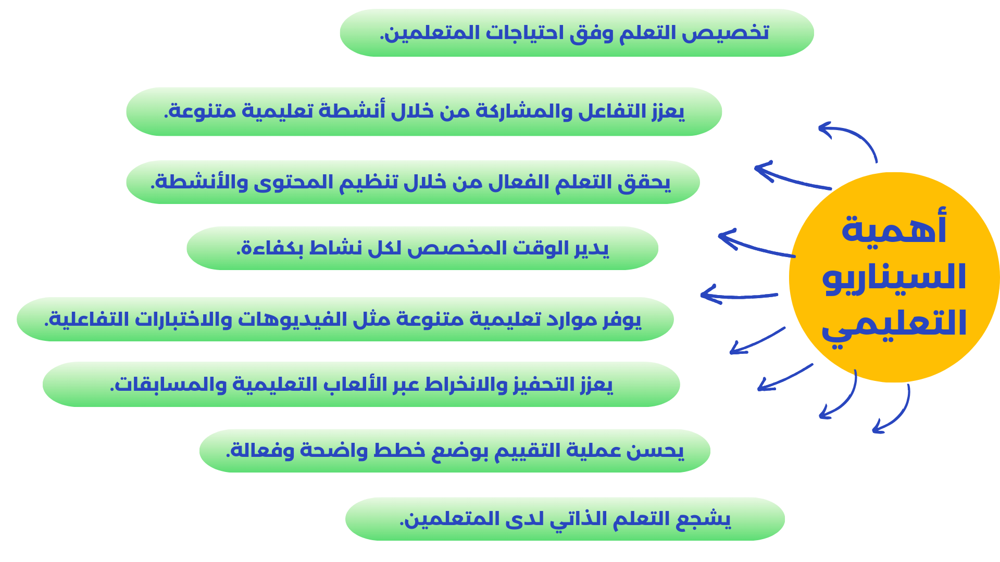
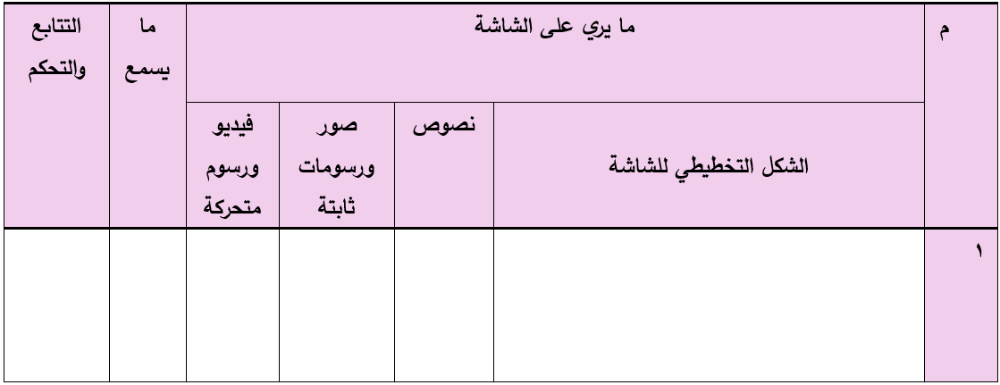

🔹 تعريف السيناريو التعليمي:
يعد دليل يوجه فريق العمل المسؤول لإنشاء البرمجية التعليمية أو المقرر الإلكتروني، ويعرف بأنه وثيقة تعليمية متكاملة تجمع بين النص المكتوب والمسموع، تتضمن وصفًا لمشاهد مرئية متتالية تهدف لتحقيق أهداف محددة، ويمثل خريطة إجرائية تحتوي على خطوات تنفيذية مفصلة لإنتاج منتج إلكتروني، يشمل كل مكونات المنتج من أهداف واستراتيجيات تعليمية، وأنشطة تعليمية، وأدوات تقييم، ومصادر تعلم.
🔹أهمية السيناريو التعليمي :
🔹 عناصر السيناريو التعليمي:
للسيناريو عنصريين أساسين هما:العناصر البصرية، والعناصر الصوتيةالعناصر البصرية
كافة العناصر المرئية التي يتضمنها الدرس أو البرمجية التعليمية، وتشمل النصوص، والرسوم، والأشكال، والأيقونات، والصور.
العناصر الصوتية
كافة العناصر المسموعة التي تتضمنها تصميم الدرس أو البرمجية، وتشمل التعليقات المسموعة، الحوار، والموسيقى، والمؤثرات الصوتية.
🔹مراحل تصميم السيناريو التعليمي :
اتباع هذه المراحل بشكل دقيق يساهم في ضمان تحقيق الأهداف التعليمية بكفاءة وفعالية فيما يلي المراحل الأساسية لتصميم السيناريو التعليمي:تحليل الاحتياجات التعليمية
فهم الفجوة بين الأداء الحالي والمرغوب.
تحديد الأهداف التعليمية
صياغة الأهداف التعليمية بدقة.
تصميم المحتوى التعليمي
إعداد المواد التعليمية والنصوص والوسائط.
تحديد الأنشطة التعليمية
اختيار الأنشطة المناسبة لتحقيق الأهداف.
اختيار وسائل التعلم
تحديد الوسائل التعليمية المناسبة.
تصميم التقييم
إعداد أساليب تقييم فعالة.
تنفيذ السيناريو
تطبيق السيناريو على البرمجية أو الدرس.
التقييم والتحسين
مراجعة النتائج وتحسين السيناريو.
🔹معايير تصميم السيناريو التعليمي لمشروع التخرج :
1. تعميق العرض والشرح
من خلال الأمثلة الكافية وإعادة طرح الأفكار بصيغ مختلفة .
2. مقروئية الشاشة
المحافظة على مقروئية الشاشة وتقليل النصوص مع ترك هوامش وفواصل.
3. إبراز الأجزاء المهمة
من النصوص والأشكال باستخدام الألوان وتغيير أنماط الحروف.
4. مراعاة مستوى المتعلم
من حيث القدرات والاستعدادات والميول والاتجاهات والحصيلة المعرفية.
5. توحيد المصطلحات
بشكل موحد ومتناسق لتجنب التشتيت .
6. استخدام القوائم والجداول
استخدام القوائم والجداول لإظهار الترابط بين العناصر.
7. استخدام الوسائط المتعددة
استخدام الألوان والأشكال والمؤثرات الصوتية والفيديو باعتدال.
8. التسلسل المنطقي
من العام إلى الخاص، والتركيز على الجوهر وترك التفاصيل التي تشتت المستخدم.
🔹 مهام معد السيناريو التعليمي :
- تحديد النصوص والأشكال ومواقعها على الشاشة.
- تحديد عناصر التفاعل.
- تحديد المؤثرات لجذب انتباه المتعلم.
- تحديد كيفية الانتقال بين الشاشات.
- تحديد عدد الشاشات وتسلسلها.
كلما كان السيناريو معدًا بشكل واضح ومفصل، كلما قل الوقت المستغرق في تنفيذ البرمجية.
🔹 مبادئ تصميم السيناريو التعليمي الجيد لمشروع التخرج :
تحديد الأهداف التعليمية
حدد بوضوح ما الذي تريد أن يتعلمه الجمهور المستهدف.
التسلسل المنطقي
مقدمة محتوى، نشاط، تقييم
مراعاة الفروق الفردية
مراعاة خصائص الفئة المستهدفة
دمج الوسائط المتعددة
استخدام النصوص، الصور، الفيديو، والصوت لجذب الانتباه.
تحديد الأدوار
وضوح دور كل طالب في مشروع التخرج
التفاعلية
أنشطة وأسئلة ومحاكاة لجعل التعلم مشوقًا.
الواقعية
ربط المحتوى بمواقف أو مشكلات واقعية للمتعلمين.
التغذية الراجعة
تقديم ردود فورية وواضحة بعد كل تفاعل لتعزيز التعلم.
🔹 أشكال السيناريو التعليمي
يجب أن يكون هناك قالب Template متفق عليه بين فريق العمل (المصمم التعليمي، مصممي الرسوم، المبرمجين).
لكل نوع من المكونات (الحركة، التفاعل، التسجيل الصوتي) قالب خاص به يحتوي على نص، وصف الحركة، وأعمدة ملاحظات
شكل قالب سيناريو الوسائط المتعددة:
